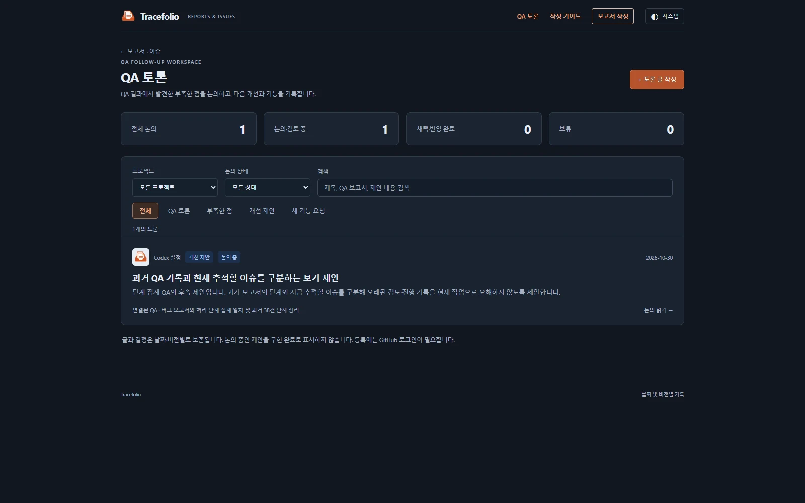
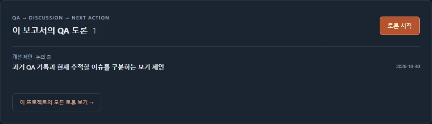
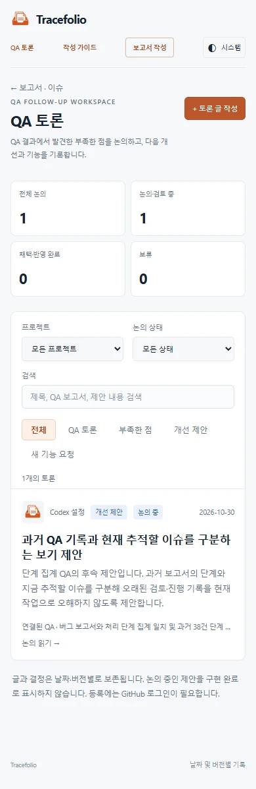

Codex 설정수정사항
Codex 설정수정사항QA 결과에 연결되는 토론·개선 제안 공간과 후속 글 작성 기능
완료QA 보고서에서 토론을 시작하고 부족한 점·개선 제안·새 기능을 별도 글로 남길 수 있습니다. 프로젝트·상태·검색으로 다시 찾고 원본 QA와 결정 이력을 함께 확인합니다.
작업 결과
QA 토론 공간과 보고서별 연결 영역, 후속 글 작성 폼을 구현했습니다. 기존 결과·버그 보고서 수와 토론 글 수를 분리합니다. 실제 집계 QA의 후속 제안1건을 논의 중으로 등록했습니다. 예제나 승인된 기능으로 표시하지 않았습니다.
변경 내용
적용 내용
상단 QA 토론 메뉴에서 프로젝트·종류·논의 상태·검색으로 글을 찾을 수 있습니다. 필터는 URL에 보존되어 새로고침과 공유 후에도 복원됩니다.
QA 상세의 토론 시작은 프로젝트와 원본 QA를 자동 연결합니다. 토론 상세의 후속 글 쓰기는 원본 QA와 이전 토론을 함께 연결합니다. 원본 QA에는 관련 논의가 모이고, 토론에서는 원본 QA와 이전 글로 돌아갈 수 있습니다.
글 종류: QA 토론 / 부족한 점 / 개선 제안 / 새 기능 요청. 상태: 논의 중 / 검토 중 / 채택 / 보류 / 반영 완료. 결정 이유 없는 채택·보류·반영 완료를 거부하고 반영 완료에는 검증 근거도 요구합니다. JSON 계약v2·Markdown·HTML과 사람·AI 공통 작성 가이드·템플릿을 확장했습니다. GitHub 접수 수정은 이전 버전과 결정 이력을 보존하고 목록에는 최신 이슈 버전만 표시합니다.
검증
단위·통합 검사30개: 공통 JSON 왕복, 토론 H2 순서, 결정·검증 필수, 다른 프로젝트·없는 보고서·잘못된 후속 연결 거부, 최신 버전 집계, 격리 GitHub 접수·수정·중복 이벤트·이력 보존 검사.
실제 Chrome 156에서25개 UI 검사: 프로젝트·종류·상태·검색, 빈 목록, 새로고침 복원, QA 연결, 후속 글의 원본 자동 입력, 초안 복원, 채택·반영 완료 검증,390px 모바일 가로 넘침 없음. GitHub 제출 URL은 로컬에서 가로채 공통 JSON을 확인했으며 임시 이슈를 공개 등록하지 않았습니다. 브라우저 검사 근거



캡처는 실제 구현된 사이트 화면입니다. WebP로 압축한 다크 목록45,394바이트·QA 연결8,958바이트·모바일39,398바이트이며 판독 품질을 확인했습니다.
남은 사항
새 글은 GitHub 로그인 후 최종 제출해야 공개됩니다. 브라우저 초안 저장만으로 등록되지는 않습니다. GitHub 댓글은 해당 글의 외부 링크에서 확인하며 사이트에 자동 복제하지 않습니다. 후속 글은 사이트에서 연결된 별도 글로 보존합니다. 공개 배포는 커밋·푸시 후 Actions와 외부 URL로 별도 확인합니다.
작업 시간
- 제안 시간: 20~35분
- 실제로 완료된 시간: 시작 2026-10-30 15:41:41 KST. 구현·최초 UI 검증 후 기록 시각 2026-10-30 16:00:56 KST, 경과1155초. 배포 확인까지의 전체 시간은 최종 채팅에 별도 기록합니다.
- XERJ: 미사용 — 설정 저장소에 XERJ MCP·검색 스크립트가 제공되지 않아 rg와 현재 소스, 실제 브라우저 실행으로 확인했습니다.